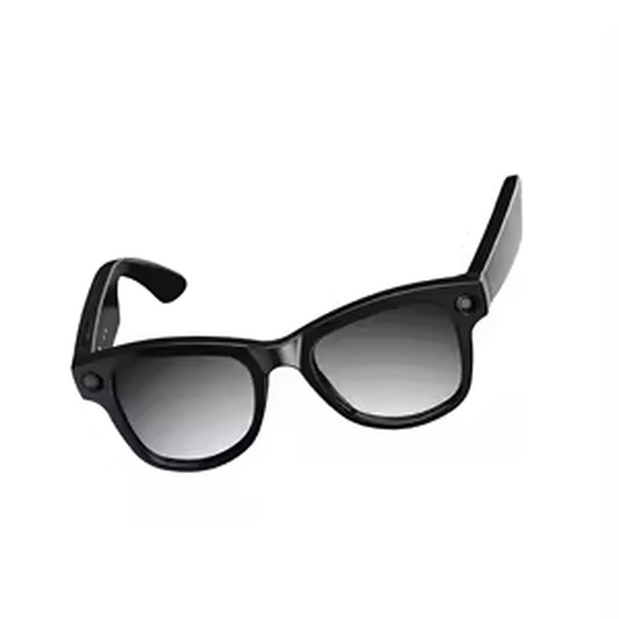

Pourquoi VELA existe
La confiance ne devrait pas arriver en dernier.
J’ai travaillé sur des lunettes intelligentes avant de lancer VELA. C’est là que j’ai compris une chose : dans ce genre de produit, la confiance arrive toujours à la fin. On décide la fiche technique, le prix, la date de sortie — puis on ajoute une page qui promet que vos données sont bien traitées.
J’ai voulu construire l’inverse. Un produit où vous n’avez rien à croire sur parole : vous ouvrez le registre, vous cliquez sur « Vérifier », et vous voyez vous-même ce qui a été capté et ce qui est sorti de votre appareil.
C’est pour ça que le registre existe avant le reste. Il a été écrit avant la voix, avant les commandes, avant les lunettes.
— Miguel, fondateur de VELA
